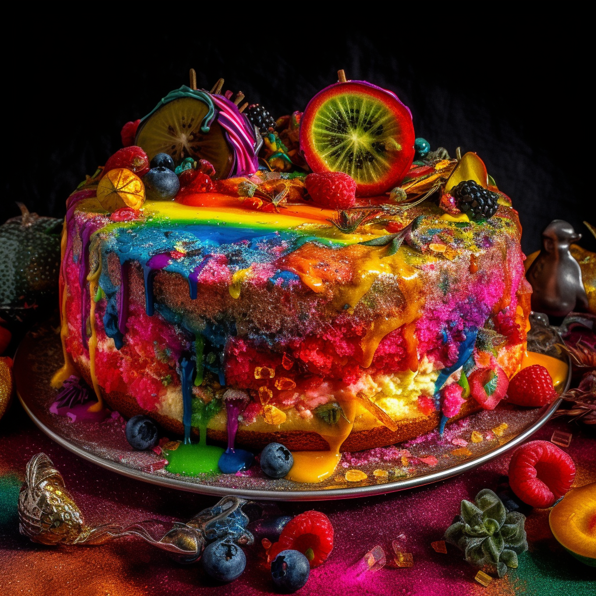

Unicorn's Utopian Upside-down Cake

Description
Step into a fairy-tale with our Unicorn's Utopian Upside-down Cake. This is more than a dessert; it's a magical journey, where caramelized fruits and fluffy cake unite in a dance of flavors.
Ingredients
- Fruits, plucked from the enchanted forest
- Brown sugar, sweet as a unicorn's dream
- A rainbow of cake ingredients, ready to spread joy
Steps
- Arrange the enchanted fruits in a pattern of the cosmos.
- Pour over a mix of stardust and cake ingredients.
- Bake until golden, under the watchful eyes of the forest sprites.
- Invert the cake to reveal a piece of utopia, then serve with a flourish of fairy dust.